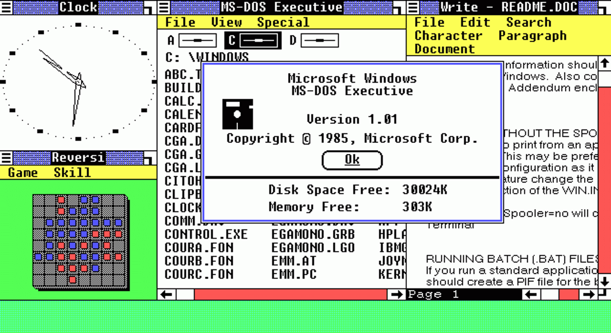
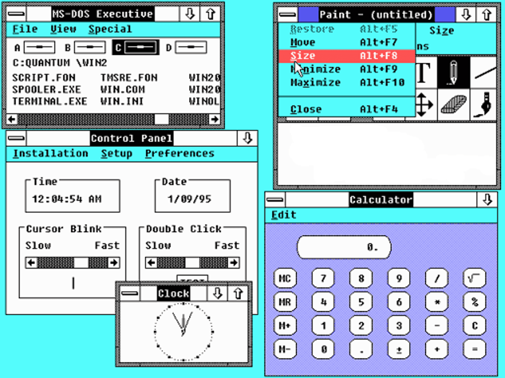

<!DOCTYPE html>
<html lang="en">

<head>
    <meta charset="UTF-8">
    <meta http-equiv="X-UA-Compatible" content="IE=edge">
    <meta name="viewport" content="width=device-width, initial-scale=1.0">
    <title>2</title>
</head>
<style>
    html,
    body {
        font-family: Helvetica;
    }

    img {
        width: 200px;
        margin: 20px
    }

    p {
        text-align: center;
    }
</style>

<body>

    <!-- <table>
        <tr>
            <td style="width:200px;"></td>
            
            <td style="Width: 70%">
                <h1>Windows 1.0</h1>
                <p>Microsoft Windows 1.0, seen here, was released in November 1985. Unfortunately for Microsoft, it
                    failed
                    to inspire -- especially when compared with the more user-friendly graphical user interface
                    developed by
                    Apple for the Macintosh.</p>
            </td>
        </tr>
        <tr>
             <td style="Width: 70%">
                <h1>Windows 2.0</h1>
                <p>Windows 2.0 was released two years later, in December 1987. The best that can be said for this
                    incarnation was that Windows remained a work in progress.</p>
            </td> 

            <td></td>
            <td style="Width: 30%"></td>

        </tr>
        <tr>
            <td></td>
            <td>
                <h1></h1>
                <p></p>
            </td>
        </tr>
        <tr>
            <td>
                <h1></h1>
                <p></p>
            </td>
            <td></td>

        </tr>
        <tr>
            <td></td>
            <td>
                <h1></h1>
                <p></p>
            </td>
        </tr>

    </table> -->

</body>

</html>